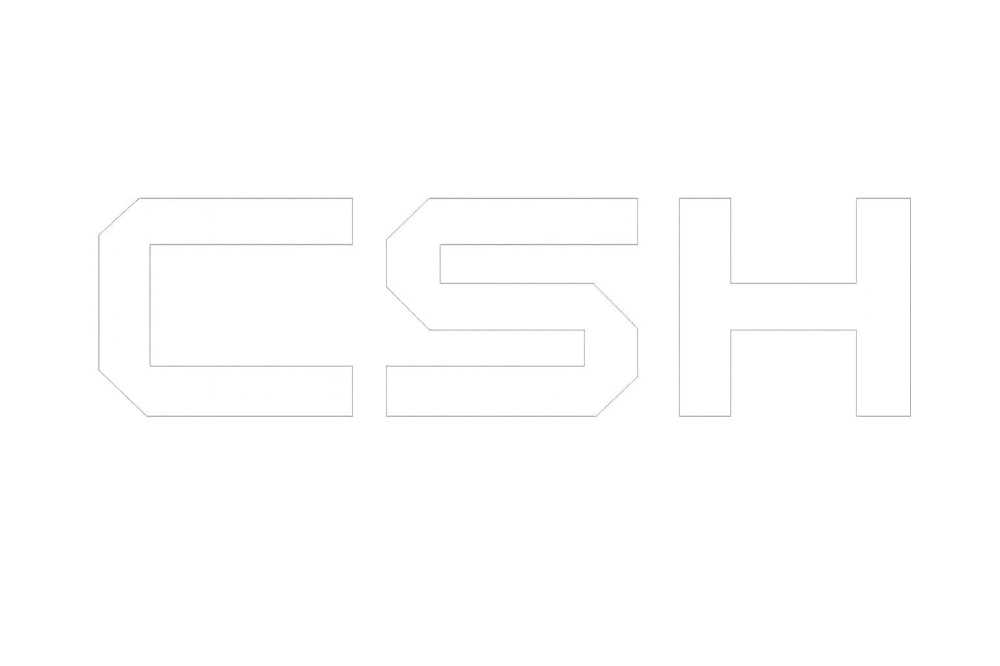
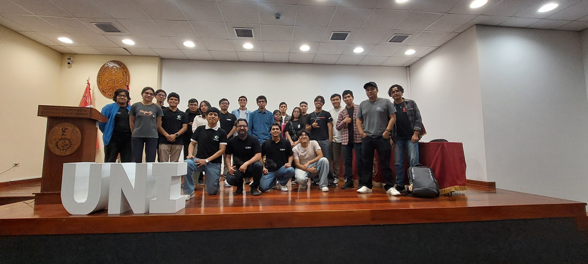
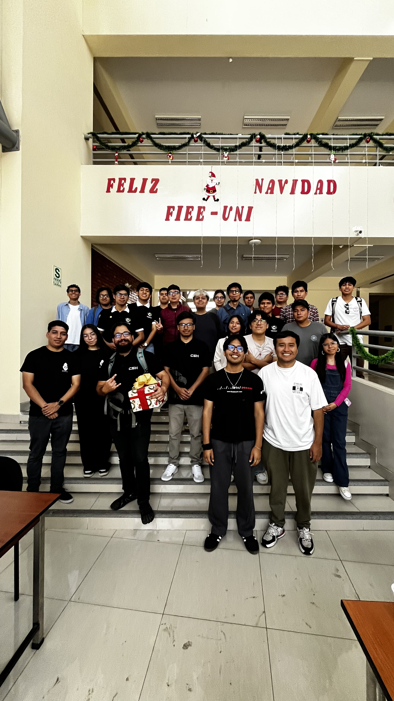
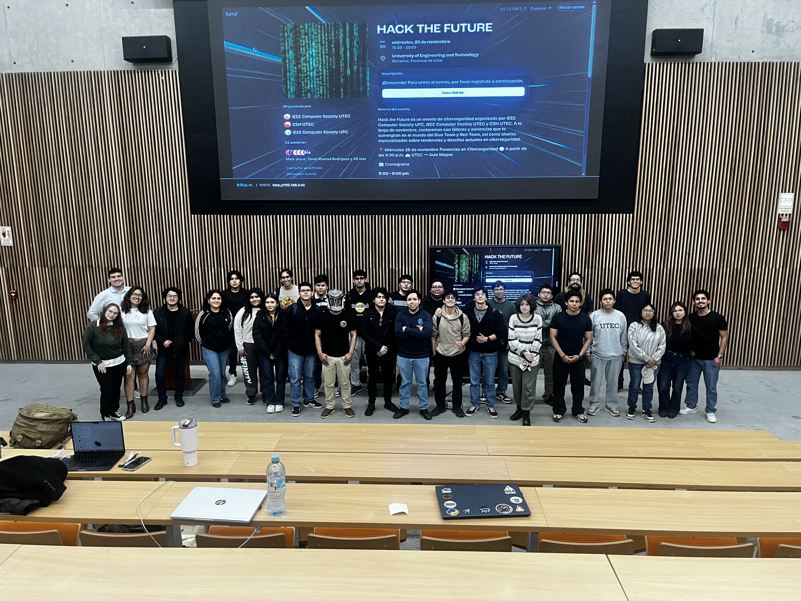
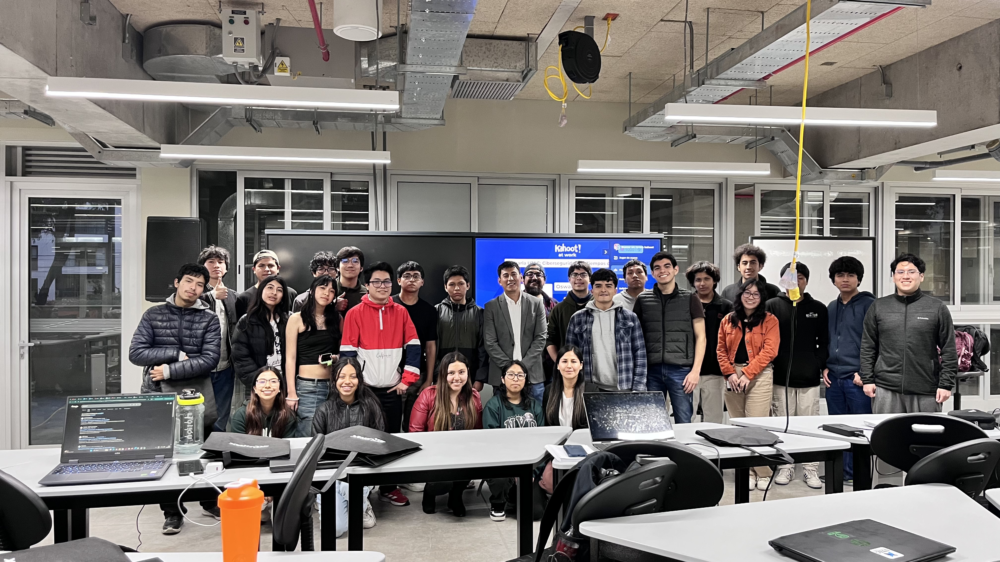

CSH es una organización estudiantil fundada en UTEC con el propósito de consolidar una comunidad sólida y técnica en torno a la ciberseguridad.
Desarrollar talento en ciberseguridad mediante formación técnica, participación en competencias, investigación aplicada y cultura hacker ética, contribuyendo a la preparación integral de estudiantes altamente competentes.
Convertirnos en la comunidad universitaria referente en ciberseguridad en el Perú, reconocida por su excelencia técnica, impacto académico y participación destacada en competencias nacionales e internacionales.
Próximamente — contenido en preparación.
PENDIENTE



Fundamentos teóricos de redes aplicados a ciberseguridad.
Ejercicios prácticos de networking y análisis de tráfico.
Recursos de apoyo y referencias para el estudio en ciberseguridad.
Networking · Homelabbing · Hardware
IS student con interés en networking, homelabbing, ciberseguridad y hardware. Me apasiona entender infraestructuras tecnológicas desde dentro.
Vi en CSH la oportunidad de expandir conocimientos y culturizar sobre ciberseguridad.
Posicionar CSH como referente en ciberseguridad en el Perú.
IA · Ciberseguridad · Impacto real
CS student con enfoque práctico. Me interesa construir soluciones con IA que tengan impacto real, especialmente en ciberseguridad.
Faltaba un espacio en UTEC para crecer en este campo — decidí ayudar a crearlo.
Certificación en Ciberseguridad y cumplir las metas del equipo CSH.
CS · Linux · Hack The Box
CS student en UTEC. Mi curiosidad está en la ciberseguridad y en cómo proteger la tecnología que usamos a diario.
Más allá de los términos técnicos, CSH es el lugar para construir cultura de seguridad juntos.
Conectar con profesionales top del sector y certificarme en HTB.
Normativas · Riesgos · Redes
Estudiante de Ciberseguridad interesada en normativas, gestión de riesgos y seguridad en redes.
Impulso iniciativas de seguridad digital aportando desde mi rol, forjando experiencias tech colaborativas.
Certificarme en idiomas y seguir explorando nuevas áreas de seguridad digital.
Eventos · Imagen Institucional
Gestión de eventos e imagen institucional. Valoro disfrutar el proceso y las cosas simples del día a día.
Busco potenciar la colaboración y el aprendizaje desde una perspectiva tech con impacto real.
Consolidar la imagen institucional de CSH y organizar eventos de alto impacto.
CS · Partnerships · Cloud
CS student. Me apasiona tender puentes entre el desarrollo técnico y el sector corporativo a través de alianzas estratégicas.
Aporto mi visión para forjar alianzas clave que fortalezcan nuestra comunidad.
Partnerships con empresas top del ecosistema tech y certificación en Cloud o PM.
Pentester · CTF · Criptografía
Matemáticas PUCP · Junior Pentester en Layer 8 Security. Criptografía y explotación de vulnerabilidades reales.
CTFs, pentesting real, mentalidad crítica: aprender haciendo, fallar rápido y mejorar constantemente.
Proyectos reales de pentesting, CTFs continuos y más certificaciones.
Blue Team · IS · Defensa
IS student en UTEC con fuerte interés en ciberseguridad, especialmente en Blue Team y defensa.
Quiero expandir la cultura de ciberseguridad en el Perú, adaptándola a la vida diaria.
Crecer mediante ponencias y obtener certificación Security+.
CS · Criptografía · Cuántica
CS student. Me encanta la criptografía y la seguridad defensiva, especialmente seguridad física de entornos.
En ciberseguridad hay diferentes ramas — me gusta aprender de otros y aportar lo que conozco.
Aprender computación cuántica y prepararme para una certificación.
Forma parte de la comunidad estudiantil de ciberseguridad de la UTEC.
Postular a CSHTerminal interactiva — prueba: help · whoami · ls · flag · nmap